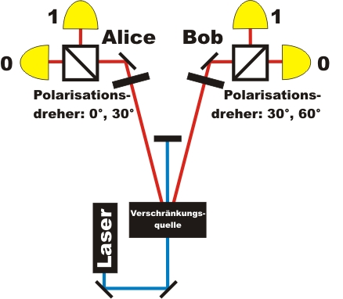
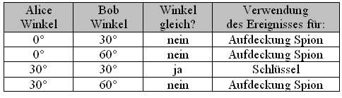
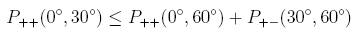
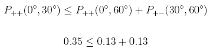
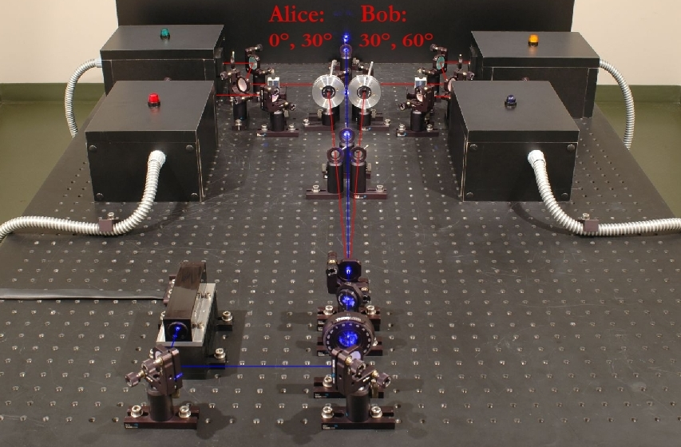

Quantenkryptographie Kapitel 5:
Quantenkryptographie mit verschränkten Photonen
In den letzten Kapiteln zur Quantenkryptographie wurde das BB84-Protokoll mit einzelnen Photon ausführlich erläutert. Auf dieser Seite geht es um Quantenkryptographiesysteme mit verschränkten Photonen. Die Idee für die Quantenkryptographie mit verschränkten Photonen wurde 1991 von dem Wissenschaftler Ekert veröffentlicht [Eke91] und als Ekert Protokoll bezeichnet. Sowohl das Ekert-Protokoll mit verschränkten Photonen als auch das BB84 Protokoll mit einzelnen Photonen verwenden das Kryptographieverfahren One-Time-Pad. Beide Protokolle unterscheiden sich nur durch die Erzeugung des Schlüssels. Für diese Seite wird das Wissen aus den Experimenten zur Verschränkung vorrausgesetzt.
Verschränkungs-Quantenkryptographie: Ablauf der Schlüsselerzeugung
Für das Verschränkungsprotokoll werden drei Parteien benötigt: Ein Sender für verschränkte Photonenpaare und zwei Empfänger (Alice und Bob) zur Messung der beiden Photonen. Der experimentelle Aufbau für die Verschränkungsquantenkryptographie (Abb. 1, Abb.2) ist exakt der gleiche wie bei den Experimenten zum Nachweis der Verschränkung. Die Eigenschaften von verschränkten Photonenpaaren und der experimentelle Aufbau sind ausführlich im Abschnitt Verschränkung beschrieben. Alice und Bob besitzen in ihrer Empfangseinheit einen Polarisationsdreher und einen polarisierenden Strahlteilerwürfel (Abb. 1). Für das Verschränkungs-Quantenkryptographiesystem können am Polarisationsdreher von Alice nur die beiden Winkel 0° und 30° eingestellt werden. Am Polarisationsdreher von Bob können nur die beiden Winkel 30° und 60° eingestellt werden.

Abb. 1: Quantenkryptographie mit verschränkten Photonen
Alice und Bob stellen zufällig und unabhängig voneinander die beiden Winkel an ihrem Polarisationsdreher ein. Insgesamt gibt es vier Möglichkeiten der Kombination (Tab. 1). Stimmen die Winkel von Alice und Bob überein, so machen beide Photonen am Strahlteiler exakt das gleiche: Beide Photonen werden entweder transmittiert (binär 1) oder beide Photonen werden reflektiert (binär 0). Ob beide Photonen am Strahlteiler transmittiert oder reflektiert werden, erfolgt absolut zufällig (Quantenzufall). Dieses zufällige Verhalten kann im Abschnitt Verschränkung unter Grundlagen direkt am Experiment beobachtet werden. Der Schlüssel kann nur bei einer von vier Winkelkombinationen generiert werden. Die restlichen drei Winkelkombinationen werden zur Aufdeckung eines Spions verwendet.

Tab. 1: Einstellung der Polarisationsdreher und Verwendung
Verschränkungs-Quantenkryptographie: Angriffe durch Spione
Ein Spion könnnte den Schlüsselaustausch manipulieren und dadurch unbemerkt den Schlüssel erhalten. Dazu muss der Spion die Quelle für verschränkte Photonenpaare durch seine eigene Quelle mit nicht verschränkten Photonenpaaren ersetzen. Bei nicht verschränkten Photonenpaaren kennt der Sender die jeweilige Polarisation der Photonenpaare und kann diese variieren. Um Alice und Bob verschränkte Photonenpaare vorzutäuschen, variiert der Spion die ausgesendeten Photonen zufällig zwischen den Winkeln 30° für die binäre 1 und -60° für die binäre 0. Für Alice und Bob gibt es bei der gleichen Winkeleinstellung von je 30° keine Möglickeit den Unterschied zwischen verschränkten und nicht verschränkten Photonenpaaren zu bemerken. Die Erzeugung von verschränkten und nicht verschränkten Photonenpaaren wird ausführlich im Abschnitt Verschränkung unter Erzeugung diskutiert.
Alice und Bob müssen nun eine Möglichkeit besitzen die Manipulation des Spion in der Quelle aufzudecken. Ein eindeutiges Zeichen für verschränkte Photonen ist die Verletzung der Bell-Ungleichung. Verschränkte Photonenpaare liegen nur dann vor, wenn die Bell-Ungleichung verletzt wird. Bei nicht verschränkten Photonenpaaren wird diese Ungleichung nicht verletzt. Alice und Bob besitzen somit ein eindeutiges Kriterium, um einen Spion aufzudecken. Die Verschränkung kann mit verschiedenen Versionen der Bell-Ungleichung (CHSH, Wigner, Hardy) überprüft werden. Für das folgende Beispiel wird die Version von Wigner [Wig70] gewählt. Die Gleichung wird im Abschnitt Verschränkung unter Nichtlokaliät erklärt. Sobald die folgende Wigner Ungleichung verletzt ist, können sich Alice und Bob sicher sein, dass kein Spion in der Quelle die Photonen manipuliert hat.
Die gewählten Winkel für die Wigner-Unglichung hängen vom Verschränkungszustand der Photonenpaarquelle ab. Unsere Photonenpaarquelle (Typ I-Quelle) emittiert den Bell-Zustand Φ+. Die Daten zur Berechnung der Wigner-Ungleichung bekommen Alice und Bob aufgrund der zufällig gewählten verschiednenen Winkeleinstellungen der Polarisationsdreher (Tabelle 1). Wenn die Messwinkel verschieden sind, wird mit diesen Daten nach Abschluss der Übertragung die Wigner-Ungleichung berechnet. Bei gleichen Messwinkeln werden die Daten zur Schlüsselerzeugung verwendet. Alle aufgenommenen Daten finden beim Verschränkungsprotokoll Verwendung.
Verschränkungs-Quantenkryptographie: Experiment
Der Aufbau für das Realexperiment zur Verschränkungs-Quantenkryptographie ist in Abbildung 2 dargestellt. Die Polarisationsdreher bei Alice und Bob haben jeweils zwei feste Winkeleinstellungen: 0° und 30° bei Alice, 30° und 60° bei Bob.
Bei allen Systemen zur Quantenkryptographie muss der Laser einzelne Pulse aussenden. Nach jedem Puls des Lasers kann ein Photonenpaar erzeugt worden sein. Somit muss nach jedem Puls die Einstellung der Polarisationsdreher zufällig geändert werden. Für unser Verschränkungsexperiment benötigen wir einen 405nm Laser mit einer langen Kohärenzlänge (single longitudinal and transversal mode diode laser). Dieser spezielle Laser kann nur kontinuierlich arbeiten - ein Pulsbetrieb ist nicht möglich. Im kontinuierlichen Betrieb entstehen die verschränkten Photonenpaare beliebig über die Zeit verteilt, wodurch der Polarisationsdreher nicht für jedes mögliche Photon individuell eingestellt werden kann. Ein pulsbarer Laser speziell für das Verschränkungs- Quantenkryptographie vom Typ I ist sehr teuer und liegt weit über unserem Budget.
Die Wigner-Ungleichung kann auch ohne pulsbaren Laser wiederlegt werden. Mit unserem kontinuierlichen Laser und fester Winkeleinstellung der Polarisationsdreher ergibt sich eine eindeutige Verletzung der Wigner-Ungleichung, womit verschränkte Photonen vorliegen und ein Spion ausgeschlossen werden kann.

Im Gegensatz zu unserem Verschränkungsexperiment mit dem kontinuierlichen Laser wird das Experiment zur Quantenkryptographie mit einzelnen Photonen (BB84-Protokoll) mit einem gepulsten Laser betrieben. Bei diesem Experiment werden zunächst einzelne nicht verschränkte Photonenpaare in einem Kristall erzeugt (siehe unter Photonenquelle für die Quantenkryptographie). Eines der beiden Photonen wird zum Triggern benutzt, das andere Photonen wird für das Quantenkryptographiesystem verwendet. Für die Erzeugung von nicht verschränkten Photonenpaaren benötigt der 405nm Laser keine Kohärenzlänge und kann im Pulsbetrieb angesteuert werden. Die Einzelpulse des gepulsten Lasers haben ein Länge von 100ps. Der Laser kann einzelne Pulse auf Knopfdruck oder mit einer Rate bis zu 80MHz aussenden. Nach jedem einzelnen Laserpuls werden die Einstellungen der Polarisationsdreher zufällig variiert.

Abb. 2: Aufbau für ein Verschränkungs-Quantenkryptographiesystem.
Verschränkungs-Quantenkryptographie: Von den Anfängen zur aktuellen Forschung
Der erste theoretische Vorschlag, um verschränkte Photonen zur Quantenkryptographie einzusetzen, wurde 1991 von dem Wissenschaftler Ekert veröffentlicht [Eke91]. Erste Quantenkryptographiesysteme mit verschränkten Photonen wurden im Jahr 2000 gebaut [Jen00-1]. Das System arbeitete mit einer Datenrate von 800 Bit/s, wobei Alice und Bob in einem Labor 360m voneinander entfernt waren. Im Jahr 2004 wurde das Quantenkryptographiesystem mit verschränkten Photonen zum ersten Mal unter Alltagsbedingungen getestet [Pop04]. Die Schlüsselübertragung fand bei diesem Experiment in einem 1,45km langen Glasfaserkabel zwischen einer Bank und der Stadthalle in Wien statt. Im Jahr 2007 gelang eine Schlüsselübertragung mit verschränkten Photonen zwischen den Inseln La Palma und Tenerifa über 144km [Urs07].
Im Jahr 2005 wurde der Vorschlag veröffentlicht, die Verschränkungsquelle direkt in Sateliten zu installieren [Pfe05]. Auf der Erde könnten Alice und Bob mit Teleskopen die verschränkten Photonen empfangen und messen. Dieser theoretische Vorschlag soll in den nächsten Jahren experimentell umgesetzt werden.Anstatt die Photonenpaare für die Quantenkryptographie mit der Polarisation zu verschränken, können Photonenpaare auch über die Phase φ verschränkt werden [Fra89], [Eke92]. Ebenfalls möglich ist die Verschränkungs-Quantenkrypographie über die Energie - Zeit Verschränkung [Bren99], [Mar04].
Autor: P. Bronner, August 2008